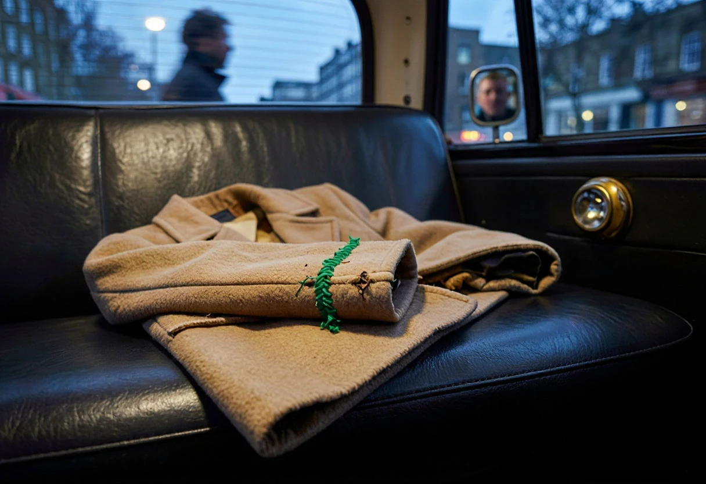
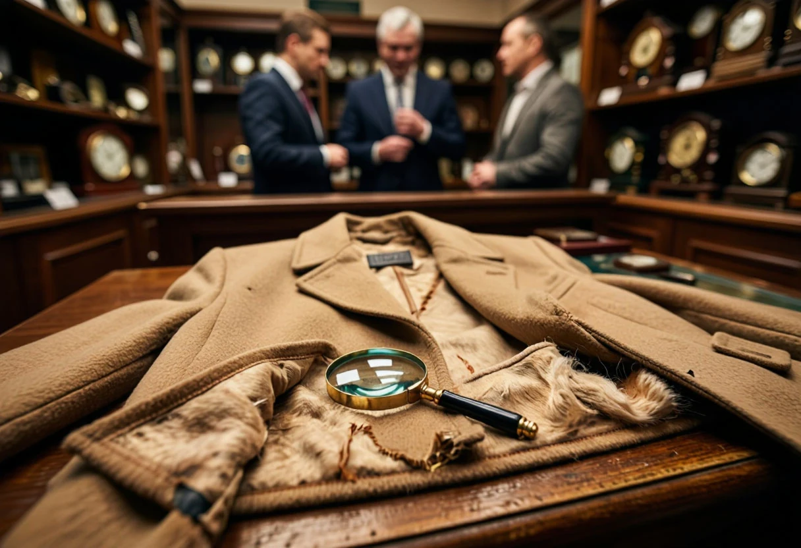
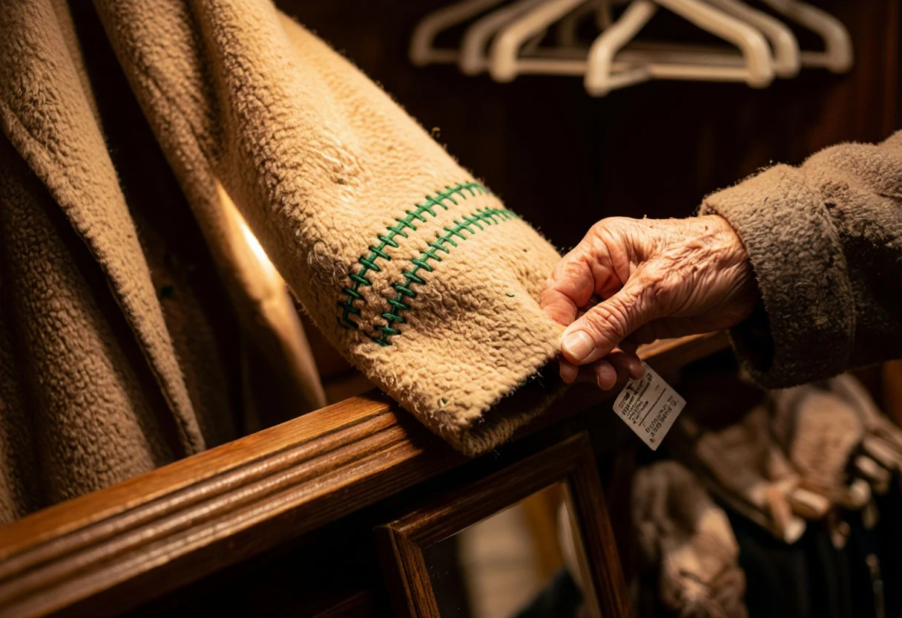

Гардероб клуба
Гардероб
Под лампой зеленеет грубая штопка. Номерки рассыпаны по стойке, а гардеробщик уже тянется к соседнему пальто.
Диалог автора и художника
- Автор
- Четыре одинаковых верблюжьих пальто висят на рейле как шеренга клерков на перекличке, а перед ними на стойке — горсть медных номерков, ссыпанных в кучу, как фишки после проигранной партии: ни один номер уже не помнит своего пальто. Только на манжете крайнего — кривые зелёные стежки, единственная улика, которую пока никто не заметил.
- Художник
- «Как именно вы хотите перевести этот замысел в композицию первого кадра: сохранить строгую фронтальную симметрию "шеренги" пальто и хаос номерков, чтобы подчеркнуть сухую ироничную статику, или сместить камеру в лёгкий профиль и направить тонкий направленный свет на правую манжету, превратив кривые зелёные стежки в единственный визуальный "жест" кадра, который зритель уловит, а гардеробщик — нет?»
- Автор
- Второе: камера чуть в профиль, и узкий холодный луч из-под абажура ложится ровно на правую манжету — зритель видит четыре верблюжьих плеча, уходящих в полутьму, горку номерков в нерезком переднем плане и одну зелёную загогулину стежков на свету, тогда как гардеробщик в глубине кадра уже тянется к соседнему пальто.
- Художник
- Крупный план на правую манжету верблюжьего пальто с кривыми зелёными стежками. Камера под лёгким углом в профиль. Узкий холодный луч из-под абажура точно выхватывает стежки. На мягком нерезком переднем плане — горка медных номерков. Четыре одинаковых пальто уходят в полумрак. В глубокой тени задний план: гардеробщик уже тянется к соседнему пальто. Сухая британская комедия: приглушённые тона, холодный дымчатый свет, строгая расстановка.

Лондонский кэб
Заднее сиденье
Пассажир исчезает за стеклом. На заднем сиденье остался рукав со знакомой зелёной ниткой.
Диалог автора и художника
- Автор
- Шофёр опускает флажок счётчика — щелчок, и от вибрации рукав пальто сползает на сантиметр по коже, будто пассажир наконец ответил.
- Художник
- Как именно вы хотите выстроить пространственную постановку кадра — зафиксировав строгий треножниковый расклад (отражение в зеркале, бежевый рукав на тёмной коже, уходящий на заднем стекле силуэт) и полагаясь только на боковой свет для выделения зелёной починки, или допускаете лёгкую механическую регулировку положения сиденья/ручки флажка, чтобы физически синхронизировать паузу счётчика с сантиметром сползания и усилить комедийную точность «визуальной реплики»?
- Автор
- Допускаю регулировку — но незаметную: сиденье сдвинуто на пару сантиметров, чтобы рукав лежал ровно на линии флажка, и щелчок счётчика приходится точно в тот миг, когда бежевая шерсть сползает по чёрной коже; камера при этом остаётся на треноге, боковой свет держит зелёную штопку единственным цветным пятном, а в зеркале — только неподвижный водительский глаз, который ждёт.
- Художник
- Кривая зелёная штопка на бежевом манжете забытого пальто легла на чёрное кожаное сиденье лондонского кэба. Скрыто сдвинутая подушка ровно совмещает складку рукава со старым металлическим флажком счётчика. Рельефный боковой свет оставляет лишь зелёную нить цветным акцентом; камера зафиксирована на штативе. На заднем стекле схематичный силуэт уходящего пассажира, а в зеркале — только неподвижный, ждущий глаз шофёра. Верблюжья шерсть на глянцевой коже, строгая доля синописная композиция, сухая кинематографичная атмосфера.

Ломбард в Сохо
Пустая подкладка
Трое мужчин и одна лупа. Они вскрыли подкладку, но на рукаве этого пальто нет знакомой метки.
Диалог автора и художника
- Автор
- Пусть лупа ломбардщика медленно опустится в распоротую подкладку и замрёт, увеличивая пустоту, — а старший из троих в ответ застегнёт манжету на собственном запястье, будто закрывает дело.
- Художник
- «Как вы хотите выстроить пространственную дистанцию между лупой, погружённой в пустоту изнанки, и запястьем старшего в кадре: развести их по разным плоскостям глубины резкости, чтобы пауза „проверяли — находят“ физически прочиталась, или сдвинуть пласт актёров так, чтобы жесты оказались в одной фокальной плоскости, подчеркнув мгновенную синхронность „закрытия дела“?»
- Автор
- Разведу их по разным плоскостям: лупа в распоротой подкладке — резкая на переднем плане, пустота читается как пауза, а запястье старшего — мягкое на заднем, пока он не застёгивает манжету; тогда фокус переползает на щёлк застёжки, и лупа с пустотой уходят в размытие.
- Художник
- Остро сфокусированная лупа, утопленная в разорванную бежевую подкладку, обнажает пустоту изнанки. Боковой свет выхватывает камельновую шерсть и тёмные полки с часами. На размытом заднем плане старший в тёмном костюме застёгивает манжету на запястье — резкость переползает на него, оставляя лупу и подкладку в мягком боке, фиксируя мгновенный клик «сделки закрыты».

Примерочная
Скидка за штопку
Покупательница держит манжету рядом с ценником. У остальных был повод искать это пальто. У неё есть повод просить скидку.
Диалог автора и художника
- Автор
- Она выкатывает манжету наружу, как свиток, и подносит к лампе у зеркала — кривые зелёные стежки ложатся единственным живым цветом на верблюжьей шерсти и отбрасывают крошечную тень, будто улику под лупой; большим пальцем она придерживает нитку, не давая ей спрятаться в шве.
- Художник
- Чтобы зафиксировать вашу деталь в одном кадре без текста, где именно мне расставить в примерочной старую магазинную лампу, зеркало и дешёвые вешалки: боковой свет должен падать на отворот под острым углом, создавая ту самую «тень‑улику» на зелёном шве, но как это увязать с реалиями пространства — лампу повесить над зеркалом, поставить на низкую полку у стены или закрепить на вешалке? Высота отражающей поверхности и шаг героини от стенки полностью определят, ляжет ли зелёная нить как островок жизни на верблюжью шерсть, не утонув в пластиковых бликах и кухонных крючках.
- Автор
- Лампу кладу плашмя на низкую полку у стены, зеркало вешаю над ней чуть наклонно, а героиню ставлю в полушаге от полки, так что свет бьёт по отвороту снизу-сбоку: зритель видит, как зелёный шов вспыхивает на верблюжьей шерсти, а его тень-улика ложится на зеркало, тогда как пластиковые вешалки остаются в тёмном мыле позади.
- Художник
- Вывернутый наружу манжет бежевого верблюжьего пальто с кривыми зелёными стежками, подсвеченный лампой на низкой полке. Тёплый боковой свет снизу-сбоку заставляет зелёный шов вспыхнуть на матовой шерсти, а его крошечная тень-улика чётко ложится на наклонное зеркало над ней. Расфокусированным тёмным фоном уходят дешёвые пластиковые вешалки. Детальная кинофотография, сухая британская палитра, акцент на фактуру верблюжьей шерсти и скульптурном свете, без текста.